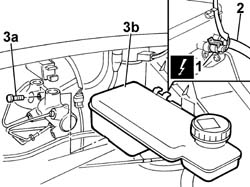

1820B10 CLUTCH FLUID TANK - R + R AND WASH INSIDE
- Path
- Procedures > 18 CLUTCH UNIT > 1820 CLUTCH RELEASE CONTROLS > 1820B HYDRAULIC CLUTCH SYSTEM > 1820B10 CLUTCH FLUID TANK - R + R AND WASH INSIDE
- Kind
- repair procedure (removal / refitting; the operation number is the code)
- Applies to
- all engines; all production periods
- Interactive page
- https://sloeber94.github.io/elrnDB-fDct/en/#/244001011
Applies to: all engines; all production periods
 Removing
Removing
 Refitting
Refitting- Disconnect the negative battery terminal.
1. Disconnect the electrical connection for the brake/clutch fluid level sensor.
 | Description | Connector |
|---|---|---|
1 | Brake fluid level sensor (switch) | K025 |
2. Disconnect the brake pump supply pipe.
3. Undo the fixing bolt (3a) and remove the brake/clutch fluid reservoir (3b).

Applies to: all engines; all production periods
Refitting
Removing- Fit the brake/clutch fluid reservoir in the housing on the master cylinder and tighten the fixing bolt.
- Connect the brake pump supply pipe.
- Connect the electrical connection for the brake/clutch fluid level sensor.
| Description | Connector |
|---|---|---|
. | Brake fluid level sensor (switch) | K025 |
- Connect the negative battery terminal.